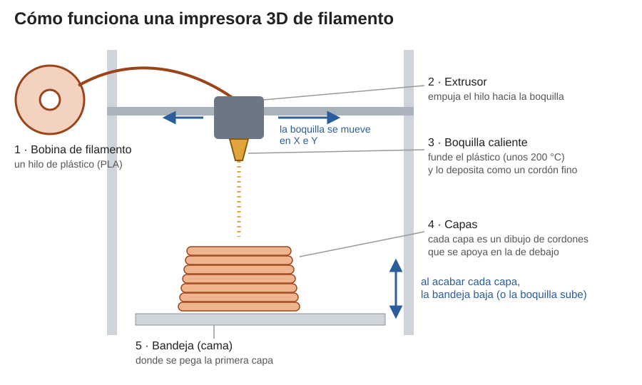
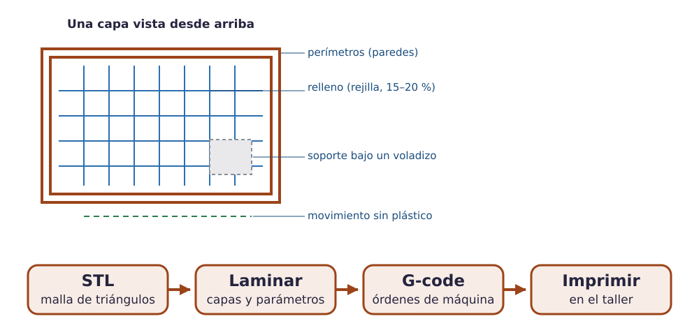
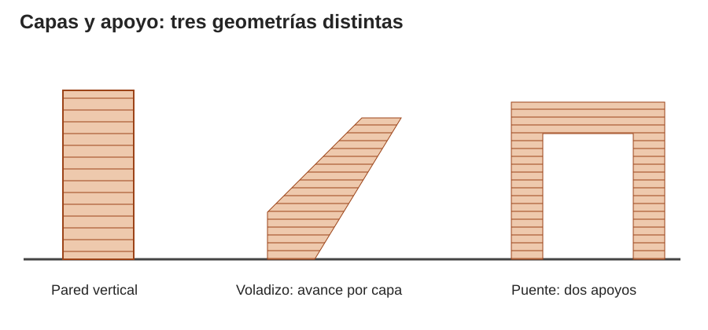
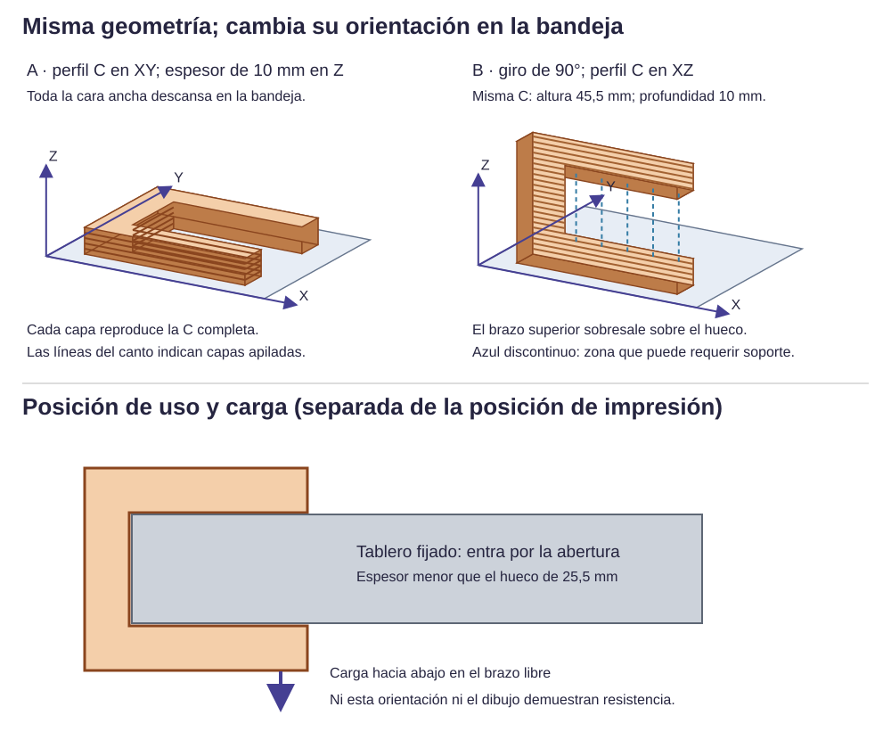

Contenido
Lo que vas a aprender
Ya sabes diseñar en 3D. Ahora vas a entender cómo se convierte ese diseño en un objeto que puedes tocar, para diseñar piezas que se puedan fabricar bien.
1. Añadir o quitar material
Hay dos grandes formas de fabricar una pieza:
- Fabricación aditiva: se añade material poco a poco hasta formar la pieza. Es lo que hace una impresora 3D.
- Fabricación sustractiva: se parte de un bloque o una plancha y se le quita material: serrar, taladrar, limar, o con máquinas como la cortadora láser o la fresadora.
En el taller del instituto usaremos las dos: la impresora 3D y las herramientas de mano.
2. Cómo funciona una impresora 3D
La impresora del taller es de filamento: funde un hilo de plástico y lo va dejando como un cordón muy fino, igual que una manga pastelera. Cada pasada dibuja una capa; al terminar, empieza la siguiente encima.

3. Del diseño a la impresora
La impresora no entiende tu diseño de Tinkercad directamente. Hay tres pasos:

- STL: el archivo que exportas de Tinkercad. Describe la superficie de la pieza con pequeños triángulos.
- Laminador: un programa que corta la pieza en capas finas y calcula por dónde pasará la boquilla en cada una. Lo usarás en el apartado siguiente.
- G-code: el archivo de órdenes para la impresora: muévete aquí, echa plástico, calienta a tal temperatura. Cada modelo de impresora necesita el suyo; los de las impresoras del taller los prepara tu profesor.
4. Cada capa necesita algo debajo
El plástico sale blando: si una capa no tiene nada debajo, se cae. Por eso hay formas fáciles y formas difíciles de imprimir.

- Pared vertical: cada capa se apoya entera en la de abajo. Sin problemas.
- Voladizo: una parte que sobresale. Si es poco inclinada (hasta unos 45° desde la vertical), cada capa se apoya en parte en la anterior y suele salir bien. Si es más horizontal, se cae.
- Puente: un techo entre dos apoyos. Si es corto, la impresora lo puede tender de lado a lado.
- Soportes: cuando algo queda en el aire, el laminador añade unos pilares de plástico que se quitan después. Gastan material y dejan marcas.
5. Elegir cómo se apoya la pieza
La misma pieza se puede imprimir apoyada de varias formas, y eso lo cambia todo. Mira este gancho en forma de C:

- Tumbado (la cara ancha en la bandeja): todas las capas tienen la forma de la C completa. No hay nada en el aire.
- De pie: el brazo de arriba queda en el aire y necesita soportes.
6. Paredes, relleno y agujeros
- Una pieza impresa no es maciza: tiene unas paredes exteriores y un relleno interior en forma de rejilla. Un 15 % de relleno es suficiente para la mayoría de piezas que no soportan peso.
- Las paredes muy finas pueden no imprimirse: la boquilla deja cordones de unos 0,4 mm de ancho. Si una pared es más fina que dos o tres cordones, revísala en el laminador.
- Los agujeros salen un poco más pequeños de lo diseñado. Si un tornillo de 4 mm tiene que pasar, el agujero se diseña de 4,3 a 4,5 mm.
- Las piezas que encajan necesitan holgura, como la tapa del reto 3. La buena se encuentra imprimiendo una pieza pequeña de prueba.
7. Otras máquinas: cortar en vez de añadir
Para piezas planas existen máquinas que cortan siguiendo un dibujo del ordenador: la cortadora láser (madera fina, cartón, metacrilato), el plóter de corte (vinilo, cartulina) y la fresadora CNC (madera o plástico más grueso, también en 3D). En nuestro taller no hay ninguna: las piezas planas las marcaremos y cortaremos a mano, usando una plantilla impresa a tamaño real.
Compruébalo
Imagina cada pieza apoyada en la bandeja tal como se describe. ¿Se imprime sin problemas o necesita soportes (o girarla)?